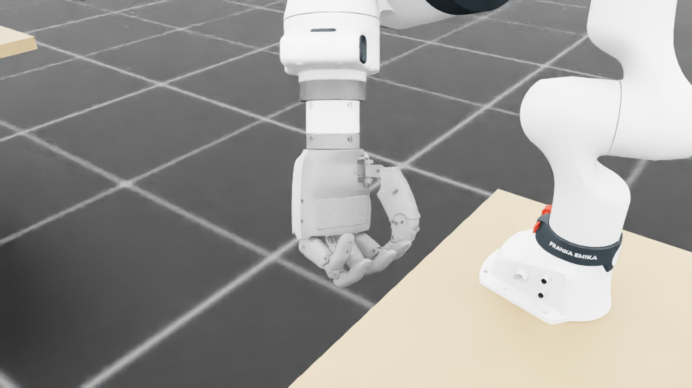
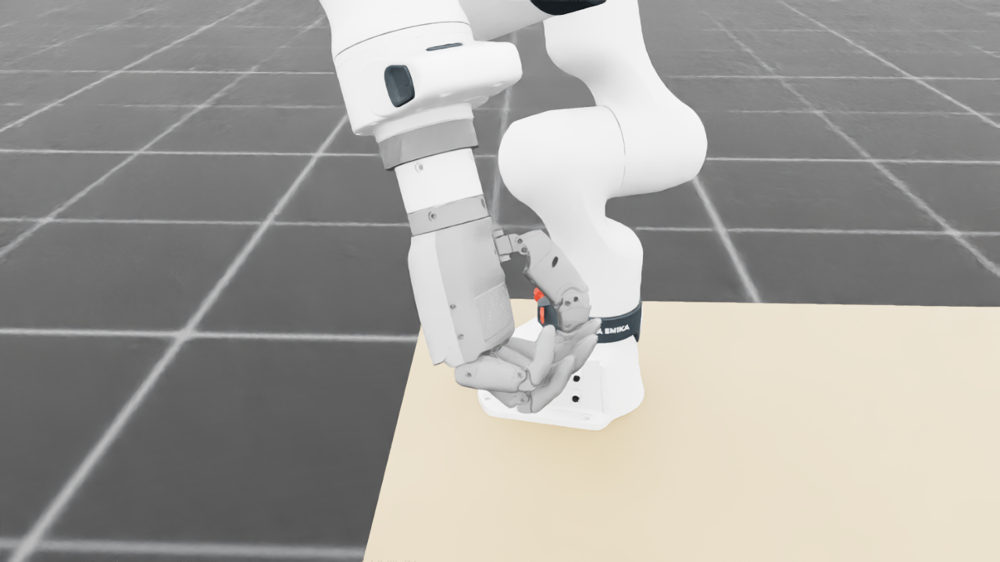
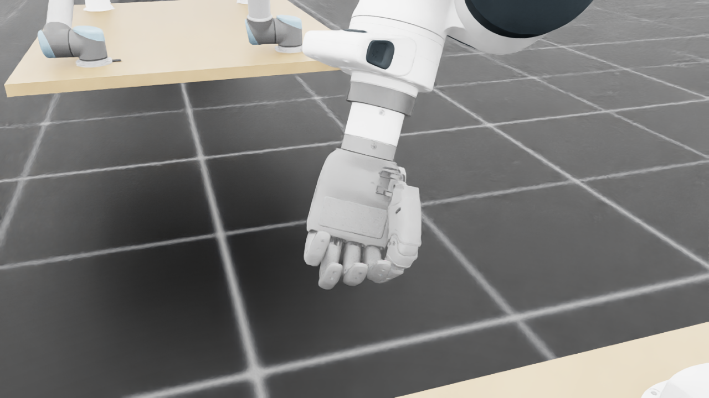
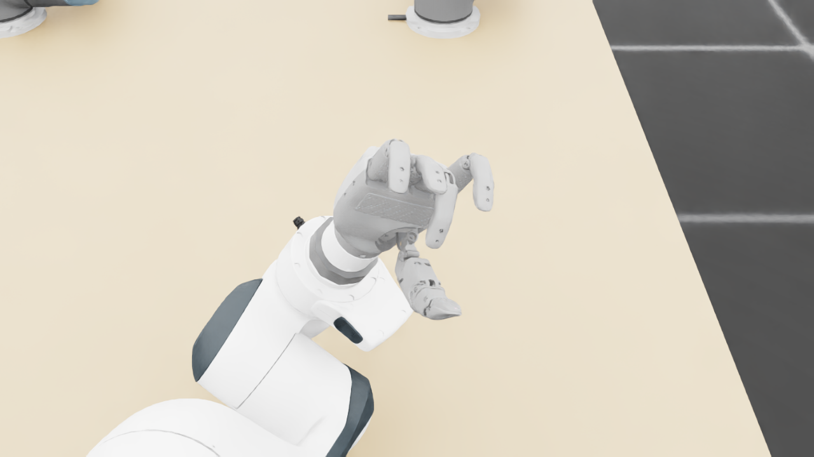
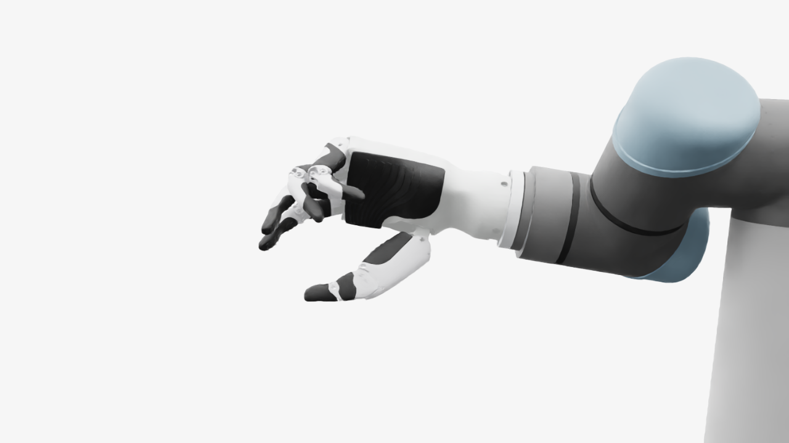
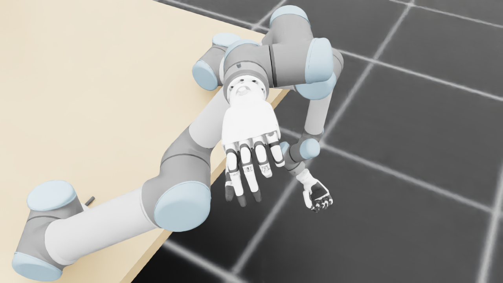
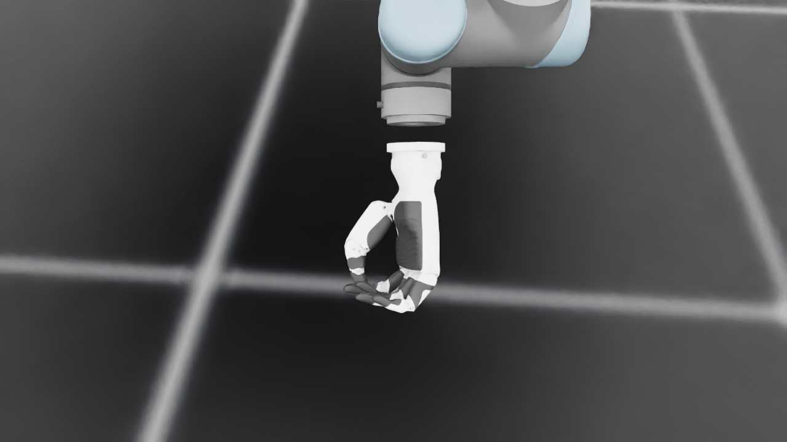
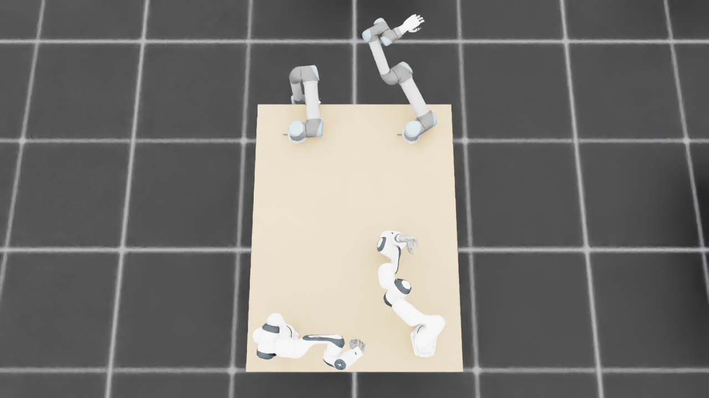
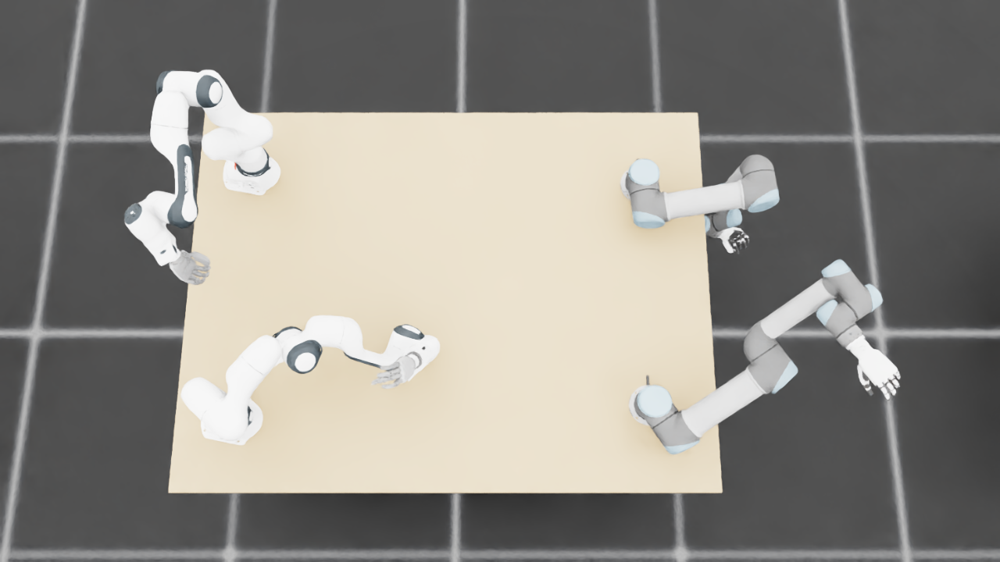
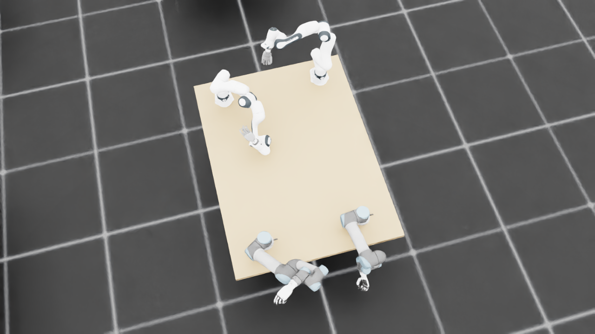

规定初始像素覆盖已通过独立数据验收，完整12步与物理安全未通过。Prescribed initial pixel coverage passes the independent DATA audit; full12-step and physical acceptance remain incomplete. Original1280×720; no edits/crop. Every image below is INITIAL, not micro1/final.
{"seed": 1, "proposal_id": 2143, "global_id": 16479, "family": 3}









{
"qualified": true,
"arms": {
"F_L": {
"qualified": true,
"palm_visual_peak_pixels": 20495,
"finger_family_peak_pixels": {
"thumb": 9104,
"index": 2493,
"middle": 2729,
"ring": 2906,
"little": 5262
},
"per_native_body_peak_pixels": {
"/World/envs/env_15/F_L/f2_hand/left_hand_base": 31929,
"/World/envs/env_15/F_L/f2_hand/left_index_1": 1514,
"/World/envs/env_15/F_L/f2_hand/left_middle_1": 1363,
"/World/envs/env_15/F_L/f2_hand/left_pinky_1": 3197,
"/World/envs/env_15/F_L/f2_hand/left_ring_1": 1264,
"/World/envs/env_15/F_L/f2_hand/left_thumb_1": 753,
"/World/envs/env_15/F_L/f2_hand/left_index_2": 1268,
"/World/envs/env_15/F_L/f2_hand/left_middle_2": 1366,
"/World/envs/env_15/F_L/f2_hand/left_pinky_2": 2127,
"/World/envs/env_15/F_L/f2_hand/left_ring_2": 2180,
"/World/envs/env_15/F_L/f2_hand/left_thumb_2": 5857,
"/World/envs/env_15/F_L/f2_hand/left_thumb_3": 2320,
"/World/envs/env_15/F_L/f2_hand/left_thumb_4": 609
},
"native_body_visibility_gaps": [],
"all_native_hand_bodies_observed": true,
"full_mesh_coverage_certified": false,
"all_recorded_attempt_peak": {
"qualified": true,
"palm_visual_peak_pixels": 20495,
"finger_family_peak_pixels": {
"thumb": 9104,
"index": 2493,
"middle": 2729,
"ring": 2906,
"little": 5262
},
"per_native_body_peak_pixels": {
"/World/envs/env_15/F_L/f2_hand/left_hand_base": 31929,
"/World/envs/env_15/F_L/f2_hand/left_index_1": 1514,
"/World/envs/env_15/F_L/f2_hand/left_middle_1": 1363,
"/World/envs/env_15/F_L/f2_hand/left_pinky_1": 3197,
"/World/envs/env_15/F_L/f2_hand/left_ring_1": 1264,
"/World/envs/env_15/F_L/f2_hand/left_thumb_1": 753,
"/World/envs/env_15/F_L/f2_hand/left_index_2": 1268,
"/World/envs/env_15/F_L/f2_hand/left_middle_2": 1366,
"/World/envs/env_15/F_L/f2_hand/left_pinky_2": 2127,
"/World/envs/env_15/F_L/f2_hand/left_ring_2": 2180,
"/World/envs/env_15/F_L/f2_hand/left_thumb_2": 5857,
"/World/envs/env_15/F_L/f2_hand/left_thumb_3": 2320,
"/World/envs/env_15/F_L/f2_hand/left_thumb_4": 609
},
"native_body_visibility_gaps": [],
"all_native_hand_bodies_observed": true,
"full_mesh_coverage_certified": false,
"qualification": false
},
"attempts": 3,
"decoded": 3
},
"F_R": {
"qualified": true,
"palm_visual_peak_pixels": 18960,
"finger_family_peak_pixels": {
"thumb": 8776,
"index": 4996,
"middle": 3646,
"ring": 2619,
"little": 4191
},
"per_native_body_peak_pixels": {
"/World/envs/env_15/F_R/f2_hand/right_hand_base": 24509,
"/World/envs/env_15/F_R/f2_hand/right_index_1": 3034,
"/World/envs/env_15/F_R/f2_hand/right_middle_1": 1423,
"/World/envs/env_15/F_R/f2_hand/right_pinky_1": 1524,
"/World/envs/env_15/F_R/f2_hand/right_ring_1": 535,
"/World/envs/env_15/F_R/f2_hand/right_thumb_1": 962,
"/World/envs/env_15/F_R/f2_hand/right_index_2": 2768,
"/World/envs/env_15/F_R/f2_hand/right_middle_2": 3273,
"/World/envs/env_15/F_R/f2_hand/right_pinky_2": 2667,
"/World/envs/env_15/F_R/f2_hand/right_ring_2": 2084,
"/World/envs/env_15/F_R/f2_hand/right_thumb_2": 4844,
"/World/envs/env_15/F_R/f2_hand/right_thumb_3": 1780,
"/World/envs/env_15/F_R/f2_hand/right_thumb_4": 1637
},
"native_body_visibility_gaps": [],
"all_native_hand_bodies_observed": true,
"full_mesh_coverage_certified": false,
"all_recorded_attempt_peak": {
"qualified": false,
"palm_visual_peak_pixels": 25517,
"finger_family_peak_pixels": {
"thumb": 8776,
"index": 4996,
"middle": 3646,
"ring": 3694,
"little": 4957
},
"per_native_body_peak_pixels": {
"/World/envs/env_15/F_R/f2_hand/right_hand_base": 31449,
"/World/envs/env_15/F_R/f2_hand/right_index_1": 3034,
"/World/envs/env_15/F_R/f2_hand/right_middle_1": 1423,
"/World/envs/env_15/F_R/f2_hand/right_pinky_1": 3151,
"/World/envs/env_15/F_R/f2_hand/right_ring_1": 2164,
"/World/envs/env_15/F_R/f2_hand/right_thumb_1": 962,
"/World/envs/env_15/F_R/f2_hand/right_index_2": 2768,
"/World/envs/env_15/F_R/f2_hand/right_middle_2": 3273,
"/World/envs/env_15/F_R/f2_hand/right_pinky_2": 2667,
"/World/envs/env_15/F_R/f2_hand/right_ring_2": 2084,
"/World/envs/env_15/F_R/f2_hand/right_thumb_2": 4844,
"/World/envs/env_15/F_R/f2_hand/right_thumb_3": 1780,
"/World/envs/env_15/F_R/f2_hand/right_thumb_4": 1637
},
"native_body_visibility_gaps": [],
"all_native_hand_bodies_observed": true,
"full_mesh_coverage_certified": false,
"qualification": false
},
"attempts": 7,
"decoded": 7
},
"U_L": {
"qualified": true,
"palm_visual_peak_pixels": 14930,
"finger_family_peak_pixels": {
"thumb": 11524,
"index": 4054,
"middle": 3929,
"ring": 3043,
"little": 4951
},
"per_native_body_peak_pixels": {
"/World/envs/env_15/U_L/wrist_3_link": 56841,
"/World/envs/env_15/U_L/left_index_1": 2216,
"/World/envs/env_15/U_L/left_little_1": 2621,
"/World/envs/env_15/U_L/left_middle_1": 2258,
"/World/envs/env_15/U_L/left_ring_1": 2183,
"/World/envs/env_15/U_L/left_thumb_1": 415,
"/World/envs/env_15/U_L/left_index_2": 1838,
"/World/envs/env_15/U_L/left_little_2": 2330,
"/World/envs/env_15/U_L/left_middle_2": 1961,
"/World/envs/env_15/U_L/left_ring_2": 2247,
"/World/envs/env_15/U_L/left_thumb_2": 6931,
"/World/envs/env_15/U_L/left_thumb_3": 2877,
"/World/envs/env_15/U_L/left_thumb_4": 1301
},
"native_body_visibility_gaps": [],
"all_native_hand_bodies_observed": true,
"full_mesh_coverage_certified": false,
"all_recorded_attempt_peak": {
"qualified": false,
"palm_visual_peak_pixels": 16875,
"finger_family_peak_pixels": {
"thumb": 13449,
"index": 5875,
"middle": 3929,
"ring": 3063,
"little": 5027
},
"per_native_body_peak_pixels": {
"/World/envs/env_15/U_L/wrist_3_link": 56841,
"/World/envs/env_15/U_L/left_index_1": 3551,
"/World/envs/env_15/U_L/left_little_1": 3125,
"/World/envs/env_15/U_L/left_middle_1": 2258,
"/World/envs/env_15/U_L/left_ring_1": 2183,
"/World/envs/env_15/U_L/left_thumb_1": 574,
"/World/envs/env_15/U_L/left_index_2": 2324,
"/World/envs/env_15/U_L/left_little_2": 2330,
"/World/envs/env_15/U_L/left_middle_2": 1961,
"/World/envs/env_15/U_L/left_ring_2": 2247,
"/World/envs/env_15/U_L/left_thumb_2": 7857,
"/World/envs/env_15/U_L/left_thumb_3": 3415,
"/World/envs/env_15/U_L/left_thumb_4": 1623
},
"native_body_visibility_gaps": [],
"all_native_hand_bodies_observed": true,
"full_mesh_coverage_certified": false,
"qualification": false
},
"attempts": 8,
"decoded": 8
},
"U_R": {
"qualified": true,
"palm_visual_peak_pixels": 10674,
"finger_family_peak_pixels": {
"thumb": 6370,
"index": 1459,
"middle": 1693,
"ring": 1515,
"little": 2788
},
"per_native_body_peak_pixels": {
"/World/envs/env_15/U_R/wrist_3_link": 28719,
"/World/envs/env_15/U_R/right_index_1": 853,
"/World/envs/env_15/U_R/right_little_1": 1763,
"/World/envs/env_15/U_R/right_middle_1": 881,
"/World/envs/env_15/U_R/right_ring_1": 951,
"/World/envs/env_15/U_R/right_thumb_1": 174,
"/World/envs/env_15/U_R/right_index_2": 640,
"/World/envs/env_15/U_R/right_little_2": 1057,
"/World/envs/env_15/U_R/right_middle_2": 812,
"/World/envs/env_15/U_R/right_ring_2": 788,
"/World/envs/env_15/U_R/right_thumb_2": 3847,
"/World/envs/env_15/U_R/right_thumb_3": 1780,
"/World/envs/env_15/U_R/right_thumb_4": 680
},
"native_body_visibility_gaps": [],
"all_native_hand_bodies_observed": true,
"full_mesh_coverage_certified": false,
"all_recorded_attempt_peak": {
"qualified": false,
"palm_visual_peak_pixels": 10674,
"finger_family_peak_pixels": {
"thumb": 6370,
"index": 1669,
"middle": 1693,
"ring": 1799,
"little": 2788
},
"per_native_body_peak_pixels": {
"/World/envs/env_15/U_R/wrist_3_link": 31930,
"/World/envs/env_15/U_R/right_index_1": 942,
"/World/envs/env_15/U_R/right_little_1": 1763,
"/World/envs/env_15/U_R/right_middle_1": 1130,
"/World/envs/env_15/U_R/right_ring_1": 1051,
"/World/envs/env_15/U_R/right_thumb_1": 209,
"/World/envs/env_15/U_R/right_index_2": 727,
"/World/envs/env_15/U_R/right_little_2": 1057,
"/World/envs/env_15/U_R/right_middle_2": 812,
"/World/envs/env_15/U_R/right_ring_2": 788,
"/World/envs/env_15/U_R/right_thumb_2": 3847,
"/World/envs/env_15/U_R/right_thumb_3": 1780,
"/World/envs/env_15/U_R/right_thumb_4": 683
},
"native_body_visibility_gaps": [],
"all_native_hand_bodies_observed": true,
"full_mesh_coverage_certified": false,
"qualification": false
},
"attempts": 9,
"decoded": 9
}
},
"wide": {
"qualified": true,
"per_native_object_peak_pixels": {
"/World/envs/env_15/F_L/fr3_link0": 2319,
"/World/envs/env_15/F_L/fr3_link1": 2634,
"/World/envs/env_15/F_L/fr3_link2": 2971,
"/World/envs/env_15/F_L/fr3_link3": 2616,
"/World/envs/env_15/F_L/fr3_link4": 2699,
"/World/envs/env_15/F_L/fr3_link5": 5104,
"/World/envs/env_15/F_L/fr3_link6": 2445,
"/World/envs/env_15/F_L/fr3_link7": 870,
"/World/envs/env_15/F_L/fr3_link8": 24,
"/World/envs/env_15/F_L/f2_hand/left_hand_base": 867,
"/World/envs/env_15/F_L/f2_hand/left_index_1": 68,
"/World/envs/env_15/F_L/f2_hand/left_middle_1": 79,
"/World/envs/env_15/F_L/f2_hand/left_pinky_1": 77,
"/World/envs/env_15/F_L/f2_hand/left_ring_1": 39,
"/World/envs/env_15/F_L/f2_hand/left_thumb_1": 28,
"/World/envs/env_15/F_L/f2_hand/left_index_2": 52,
"/World/envs/env_15/F_L/f2_hand/left_middle_2": 54,
"/World/envs/env_15/F_L/f2_hand/left_pinky_2": 47,
"/World/envs/env_15/F_L/f2_hand/left_ring_2": 44,
"/World/envs/env_15/F_L/f2_hand/left_thumb_2": 216,
"/World/envs/env_15/F_L/f2_hand/left_thumb_3": 51,
"/World/envs/env_15/F_L/f2_hand/left_thumb_4": 12,
"/World/envs/env_15/F_R/fr3_link0": 1230,
"/World/envs/env_15/F_R/fr3_link1": 1786,
"/World/envs/env_15/F_R/fr3_link2": 4325,
"/World/envs/env_15/F_R/fr3_link3": 2239,
"/World/envs/env_15/F_R/fr3_link4": 3621,
"/World/envs/env_15/F_R/fr3_link5": 2259,
"/World/envs/env_15/F_R/fr3_link6": 1460,
"/World/envs/env_15/F_R/fr3_link7": 583,
"/World/envs/env_15/F_R/fr3_link8": 137,
"/World/envs/env_15/F_R/f2_hand/right_hand_base": 670,
"/World/envs/env_15/F_R/f2_hand/right_index_1": 70,
"/World/envs/env_15/F_R/f2_hand/right_middle_1": 103,
"/World/envs/env_15/F_R/f2_hand/right_pinky_1": 74,
"/World/envs/env_15/F_R/f2_hand/right_ring_1": 83,
"/World/envs/env_15/F_R/f2_hand/right_thumb_1": 4,
"/World/envs/env_15/F_R/f2_hand/right_index_2": 95,
"/World/envs/env_15/F_R/f2_hand/right_middle_2": 55,
"/World/envs/env_15/F_R/f2_hand/right_pinky_2": 79,
"/World/envs/env_15/F_R/f2_hand/right_ring_2": 96,
"/World/envs/env_15/F_R/f2_hand/right_thumb_2": 57,
"/World/envs/env_15/F_R/f2_hand/right_thumb_3": 38,
"/World/envs/env_15/F_R/f2_hand/right_thumb_4": 56,
"/World/envs/env_15/U_L/base_link": 440,
"/World/envs/env_15/U_L/shoulder_link": 1976,
"/World/envs/env_15/U_L/upper_arm_link": 8476,
"/World/envs/env_15/U_L/forearm_link": 5688,
"/World/envs/env_15/U_L/wrist_1_link": 1440,
"/World/envs/env_15/U_L/wrist_2_link": 1619,
"/World/envs/env_15/U_L/wrist_3_link": 2468,
"/World/envs/env_15/U_L/left_index_1": 100,
"/World/envs/env_15/U_L/left_little_1": 60,
"/World/envs/env_15/U_L/left_middle_1": 108,
"/World/envs/env_15/U_L/left_ring_1": 101,
"/World/envs/env_15/U_L/left_thumb_1": 0,
"/World/envs/env_15/U_L/left_index_2": 40,
"/World/envs/env_15/U_L/left_little_2": 21,
"/World/envs/env_15/U_L/left_middle_2": 37,
"/World/envs/env_15/U_L/left_ring_2": 25,
"/World/envs/env_15/U_L/left_thumb_2": 166,
"/World/envs/env_15/U_L/left_thumb_3": 92,
"/World/envs/env_15/U_L/left_thumb_4": 57,
"/World/envs/env_15/U_R/base_link": 220,
"/World/envs/env_15/U_R/shoulder_link": 1506,
"/World/envs/env_15/U_R/upper_arm_link": 7728,
"/World/envs/env_15/U_R/forearm_link": 1297,
"/World/envs/env_15/U_R/wrist_1_link": 834,
"/World/envs/env_15/U_R/wrist_2_link": 305,
"/World/envs/env_15/U_R/wrist_3_link": 395,
"/World/envs/env_15/U_R/right_index_1": 32,
"/World/envs/env_15/U_R/right_little_1": 37,
"/World/envs/env_15/U_R/right_middle_1": 30,
"/World/envs/env_15/U_R/right_ring_1": 34,
"/World/envs/env_15/U_R/right_thumb_1": 10,
"/World/envs/env_15/U_R/right_index_2": 42,
"/World/envs/env_15/U_R/right_little_2": 32,
"/World/envs/env_15/U_R/right_middle_2": 33,
"/World/envs/env_15/U_R/right_ring_2": 39,
"/World/envs/env_15/U_R/right_thumb_2": 117,
"/World/envs/env_15/U_R/right_thumb_3": 28,
"/World/envs/env_15/U_R/right_thumb_4": 7,
"/World/envs/env_15/TableF": 136002,
"/World/envs/env_15/TableU": 151941
},
"arm_peak_pixels": {
"F_L": 23297,
"F_R": 19075,
"U_L": 22885,
"U_R": 12401
},
"table_peak_pixels": {
"TableF": 136002,
"TableU": 151941
},
"critical_body_peak_pixels": {
"/World/envs/env_15/U_L/forearm_link": 5688,
"/World/envs/env_15/U_L/wrist_2_link": 1619,
"/World/envs/env_15/U_R/forearm_link": 1297,
"/World/envs/env_15/U_R/wrist_2_link": 305
}
},
"raw_attempt_count": 35,
"PNG_count": 35,
"angle_records": 35,
"max_actual_angle_identity_error_deg": 0.0,
"held_snapshot_checks": 2752,
"universal_visibility_impossible": false,
"full_mesh_coverage_certified": false
}